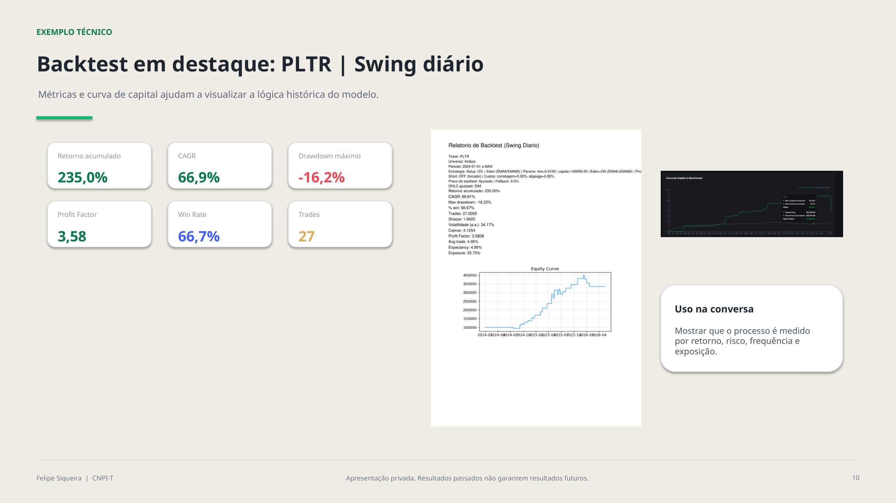
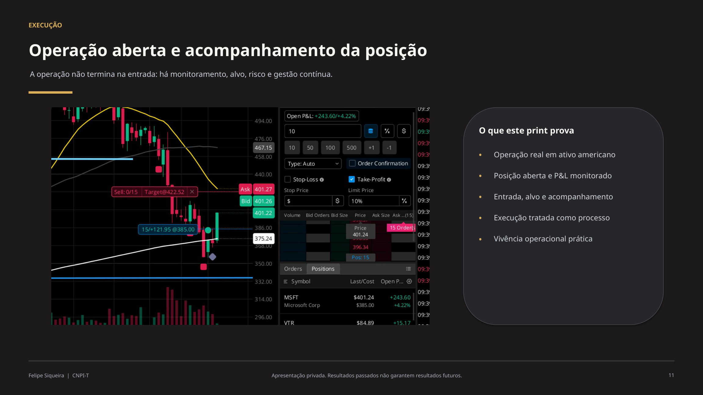

O problema real
Ter conta no exterior não resolve decisão, tempo e disciplina. Sem processo, o investidor fica exposto ao ruído.
Gestão privada no mercado americano
Carteiras e operações com abordagem quantitativa, acompanhamento próximo e prestação de contas clara para poucos clientes.
Ter conta no exterior não resolve decisão, tempo e disciplina. Sem processo, o investidor fica exposto ao ruído.
Não é sobre dicas. É sobre rotina profissional: decisão, execução, controle de risco e prestação de contas.
Gestão ativa personalizada e seletiva, com carteira núcleo, operações táticas e acompanhamento contínuo.
Analista de investimentos com certificação CNPI-T, atuação em family office e foco no mercado americano para investidores brasileiros.
Formação em Administração de Negócios pela Fundação Getulio Vargas (FGV), com perfil técnico orientado a estratégias quantitativas, gestão de risco e execução disciplinada.
A abordagem combina leitura de cenário, dados e operação para transformar análise em processo contínuo e transparente.
Macro: juros, inflação, risco e apetite global.
Índice: SPY/QQQ como termômetro de direção.
Setor: força e fraqueza relativa.
Ação/ETF: preço, liquidez e estrutura.
Timing: gatilho operacional e invalidação.
Risco: tamanho de posição, exposição e drawdown.
Mensagem central: o setup entra no fim. Primeiro vem o raciocínio.
Backtests são usados para avaliar comportamento histórico de retorno, risco, frequência e consistência, sem promessa de resultado futuro.
Acompanhamento de posição, histórico auditável, métricas recorrentes e dashboard para o cliente não ficar no escuro.
Dois exemplos reais do material de apresentação: curva de capital e acompanhamento de operação.


O início alinha objetivo, capital, rotina de acompanhamento, tolerância a risco e limites operacionais antes de qualquer execução.